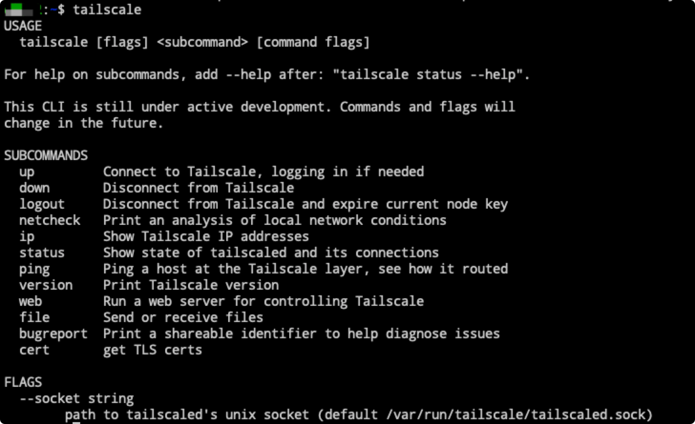

Tailscale：基于 WireGuard 异地组建虚拟局域网
Tailscale 是一种基于 WireGuard 的虚拟组网工具，它能帮助我们把安装了 Tailscale 服务的机器，都放到同一个局域网内，即公司或者家里的 PC 机器连到同一网络，甚至云服务器都能放到同一个局域网。
1. 工具介绍
介绍该工具的有点和特性
没有公网 IP，又想能满足远程办公需求？担心暴露公网 IP 而被频繁的恶意扫描、攻击？Tailscale 的诞生，成为解决这些痛点的全新选择。
- 无需注册/授权登录/开箱即用
- 无需配置防火墙
- 没有额外的配置
- 高安全性/私密性
- 自动密钥轮换
- 基于
WireGuard®保护 - 点对点连接
- 支持用户审查端到端的访问记录
- 访问/连接/高度可控
- 支持使用节点共享与指定的
Tailscale用户共享您的设备 - 支持使用
CL限制对设备的访问。
- 支持使用节点共享与指定的
- 低延时/不限速
- 设备间在不跨运营商的前提条件下，设备所在网络环境的上行带宽就是访问下载的最大带宽
我们知道 TailScale 是基于 Wireguard 开发而来的，所以天生支持协议加密，安全性更高，而且是 P2P 连线，流量不经服务器，延迟更低。并且，对个人用户免费。
- [1] 传输文件
TailScale 内置 taildrop，可以在设备间传输文件，因为其支持全平台，所以实际上这也是一个很好用的全平台文件传输工具。而且如果设备处在同一个局域网的话，传输速度也会非常快。
- [2] 远程开发
通过笔记本可以远程台式主机或者服务器，进行开发。优点在于，台式机硬件的售价非常便宜，可以用很低的成本组装一台超强配置的机器。移动办公的精髓应该在与你可以随时随地的连接上一个统一且强大的工作环境， 而不是抱着同一台笔记本走南闯北。
- [3] 服务代理
TailScale 节点间是点对点 tls 连接，所以实际上也可以用来做网络代理。
2. 使用方式
介绍 Tailscale 官网的在线使用方式
- 当我们访问官方并点击了
Get Started之后，会发现只能够使用谷歌、微软和同性交友平台的账户镜像登录，使用自己邮箱进行属于增值付费业务。
- 这里我们使用自己的账户进行登录之后，需要我们首先现在对应设备的客户端工具，只有
Linux设备可以使用命令行安装，其他设备均需要安装客户端工具才行。需要注意的是，如果你是macOS的话，需要使用除中国区外的账户进行登录(得准备一个美区账户)，才能够安装。如果是安卓手机的话，需要到谷歌应用商店安装(需要科学上网)。
# linux
$ curl -fsSL https://tailscale.com/install.sh | sh
# 还可以使用docker安装
# https://github.com/tailscale/tailscale/blob/main/Dockerfile
$ docker run -d --name=tailscaled \
-v /var/lib:/var/lib -v /dev/net/tun:/dev/net/tun \
--network=host --privileged fastandfearless/tailscale tailscaled
# 打印tailscale登录地址并进行授权登录
$ docker exec tailscaled tailscale up
# 获取设备TailscaleIP地址
$ ip addr show tailscale0
# 查看设备状态
$ docker exec tailscaled tailscale status
# 本地编译安装
# https://github.com/tailscale/tailscale/wiki/Tailscaled-on-macOS
# 安装go工具
$ brew install go
# 直接编译
# 会在$HOME/go/bin目录下面生成二进制包
$ go install tailscale.com/cmd/tailscale{,d}@main
# 后台守护进程运行tailscaled服务
# sudo tailscaled uninstall-system-daemon
$ sudo $HOME/go/bin/tailscaled
$ sudo $HOME/go/bin/tailscaled install-system-daemon
# 启动服务
$ tailscale up
$ tailscale status
- 当你登录并授权登录成功后，会自动为该设备分配一个
Tailscale IP(可用于局域网内设备间的访问)，之后可以看到这么一份带有IP的列表了。
- 有了
Tailscale的虚拟组网服务后，办公室和自由职业时期的居家办公体验，相差已经变得很小了。下来，我们就慢慢了解一下其用法和使用场景吧！
3. 使用场景
安装上之后，我们可以怎么玩呢？
- [1] 访问内网服务
如果你使用的 Mac 电脑的话，肯定存储是一个头痛的问题，因为一般情况下都会购买 128G 和 256G 版本的机器(不要问为什么，问的话就是穷)。这样当磁盘不够的时候，就让人感觉到焦虑。但是当我们使用 Tailscale 并拥有 WebDav 之后，就能很好的拓展存储空间，可以内网连接我的群晖 NAS 提供的 WebDav 了。
- [2] 远程访问机器 - 群晖
远程使用 PC 的情况，可以通过 TeamViewer 完成。但是使用 RDP 协议来远程操作，效果体验更佳而且更稳定。但是 PC 机需要一直开机状态，如果我们只是偶尔使用一下的话，这有些费电了。
当我们使用 Tailscale 之后，通过群晖(或者机器机器也可以)做一个反向代理方便进入家里的梅林路由器，并修改本地 Mac 的 hosts 文件来解析我们自定义的域名。群晖 NAS 的控制面板中自带了配置反向代理的地方，可以省的我们折腾。进入梅林路由器，进入网络工具中的通过网络唤醒界面，选择对应的 PC 即可。
当然，首先这台 PC 机需要配置好通过 WOL 唤醒才行，而配置可以自己参考网络唤醒全攻略。等待电脑唤醒完成后，使用远程桌面进行远程连接，就可以得到一个用户体验很不错的体验了。
- [3] 远程访问机器 - 主机
上面我们知道群晖会自带反向代理的功能，但是并不是每个人都会买这个的，那有没有其他方式来处理这个问题呢？肯定是可以的，我们这里通过 Linux 接入 TailScale 服务，让其充当网关，这样就可以问整个内网网段了。
这样做的好处，还有一个就是，家里或者公司不是每一部设备都可以安装到 TailScale 服务的，比如打印机之类的。这样设定 PC 机充当子路由(Subnet Route)，其他所有的外网的 TailScale 装置都可以透过这部 Linux 装置作为网关访问家里内网所有的设备。
# Linux机器设置IP转发(临时)
$ echo 'net.ipv4.ip_forward = 1' | sudo tee -a /etc/sysctl.conf
$ echo 'net.ipv6.conf.all.forwarding = 1' | sudo tee -a /etc/sysctl.conf
$ sudo sysctl -p /etc/sysctl.conf
TailScale 不需要防火墙配置，会自动管理规则，以允许转发。设定过程也没涉及到 iptable 的设置，一条指令可以完成。
# 替换为自己的网段(IPV4或IPV6)
$ sudo tailscale up --advertise-routes=20.13.3.0/24
这里设置完成之后，默认并没有开启转发功能。需要我们登陆网页，在控制台页面找到我们这台机器，打开路由设置功能。基于安全特性，Tailscale 每隔 6 个月需要重新授权装置，我们这里可以选择关掉这个。
- [4] 代理服务 - 科学上网
比如我在境外服务器上安装一个 tailscale 的节点，然后再在境外服务器上安装一个 cow（用来做 http proxy server）。 那我就可以在任意一台机器上，访问境外服务器的 tailscale 子网 IP + cow 端口的形式实现 HTTP/SOCKS 代理。
# 安装cow工具(梯子机器)
$ curl -L git.io/cow | bash
# 修改配置文件
$ cat /home/escape/.cow/rc
listen = http://100.100.100.100:17777
# 将其添加到systemd服务中
$ sudo vim /etc/systemd/system/cow.service
[Unit]
Description=cow service
After=network.target
StartLimitIntervalSec=0
[Service]
Type=simple
Restart=always
RestartSec=1
User=escape
ExecStart=/usr/local/bin/cow -c /home/escape/.cow/rc
[Install]
WantedBy=multi-user.target
Tailscale 提供的 relays 数量有限，而且全部在国外。 你也可以自建中继。自建中继服务器被称为 derper，是用 go 开发的，建议先安装 go 环境。go 是预编译的，安装起来很简单，下载、解压即可。
启动 derper 的参数，其中 -hostname 表示有效的公网域名，derper 会自动为这个域名申请 Let's Encrypt TLS 证书，其中 -a 表示指定 derper 监听的 tcp 端口，默认为 443，修改为其他端口的话似乎转发流量会有问题，其中 -stun 表示 stun 协议的 udp 端口，health check 的时候会用到。
# 安装
$ go install tailscale.com/cmd/derper@main
# 启动
$ sudo derper -c=/root/derper.conf -hostname=xx.xx.xx -a=:443 -stun
# 加入自启动里面
sudo vi /etc/systemd/system/derper.service
[Unit]
Description=derper service
After=network.target
StartLimitIntervalSec=0
[Service]
Type=simple
Restart=always
RestartSec=1
User=root
ExecStart=/home/escape/.go/bin/derper -c=/root/derper.conf -hostname=x.x.x.x -a :443 -stun
[Install]
WantedBy=multi-user.target
需要注意的是，因为 derper 会申请公网 TLS 证书，如果你的服务器在国内，那么域名必须要备案。 而且由于中国封锁了 Let's Encrypt，所以你的 derper 在启动一会儿后，很可能会报错表示证书申请失败。所以，使用香港、日本、新加坡的主机会好很多。
4. 命令使用
这里主要介绍 tailscale 命令的使用
- 一图搞定

- 示例演示
# 查询部署到局域网的节点IP地址
$ tailscale status
# 终端查看tailscale分配到的IP地址
$ tailscale ip
5. 参考链接
送人玫瑰，手有余香！